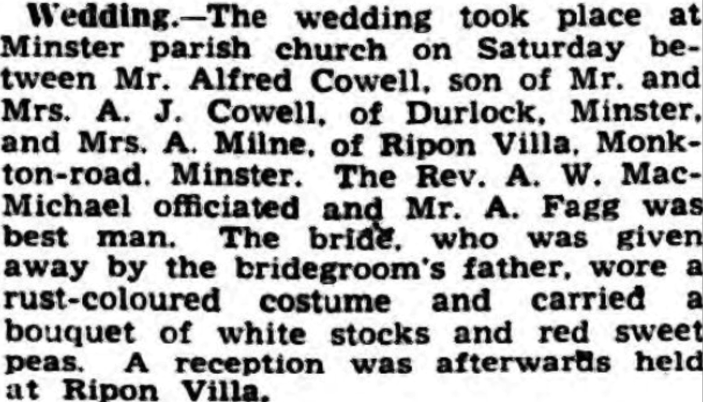

Alfred Cowell 1913 - 1986
[ Home ] | [ Calendar ] | [ Surnames Index ] | [ Census Index ] | [ Family History ]An agricultural laborer and the child of Alfred Cowell (a transport driver) and Fanny Austen, Alfred Cowell, (also known as Chib Cowell) the first cousin once-removed on the mother's side of Nigel Horne, was born in Minster, Thanet, Kent, England on Sep 24, 19131,2,3,4,5 and. He was married twice - to Ada Milne (on Jun 13, 1942 in Minster) Mary Williams (c. Feb 1951 in Thanet, Kent, England)6. He has 2 surviving children, both with Mary Williams: Nina J and Richard.
During his life, he was living at Durlock Farm Cottages, Minster in Thanet on Jun 19, 19211, in 1933 (the same place as his parents had been living on Jun 19, 1921), on Sep 29, 19392 and in 1942; and at 6 Edgar Road, Minster in Thanet in 19658.
He died on Jan 17, 1986 in Thanet4 and was buried on Minster Cemetery, Tothill Street, Minster in Thanet in Jan 19867.
Parents
- Alfred John was born on May 8, 1880
- Fanny was born c. May 1883
Citations
- 1921 Census Of England & Wales - Findmypast (was age 7 and the son of the head of the household)
- 1939 Register - Findmypast (was recorded at this address)
- England & Wales deaths 1837-2007 - Findmypast
- England & Wales, Death Index: 1984-2005 Online publication - Provo, UT, USA: The Generations Network, Inc., 2007.Original data - General Register Office. England and Wales Civil Registration Indexes. London, England: General Register Office. © Crown copyright. Published by permission of the Cont
- England & Wales, FreeBMD Birth Index, 1837-1915 Online publication - Provo, UT, USA: The Generations Network, Inc., 2006.Original data - General Register Office. England and Wales Civil Registration Indexes. London, England: General Register Office. © Crown copyright. Published by permission of the Cont
- England & Wales, Marriage Index: 1916-2005 Online publication - Provo, UT, USA: The Generations Network, Inc., 2009.Original data - General Register Office. England and Wales Civil Registration Indexes. London, England: General Register Office. © Crown copyright. Published by permission of the Cont
- Billiongraves
- 1965 Kelly's Thanet Directory
Media
Alfred Cowell - Mary Elizabeth Williams - headstone
Thanet Advertiser - 16 June 1942

Thanet Advertiser - 7 Feb 1933

1965 Kelly's Thanet Directory

Thanet Times - 20 Jan 1987

Thanet Times - 20 Jan 1987
England & Wales marriages 1837-2008 - BMD/M/1951/1/AZ/000332/130
England & Wales births 1837-2006 - BMD/B/1913/4/AZ/000312/063
England & Wales deaths 1837-2007 - BMD/D/1986/1/75444054
England Billion Graves cemetery index Transcription - US-BMD-BILLION-009318671
England & Wales marriages 1837-2008 - BMD/M/1942/2/AZ/000301/039
1939 Register Transcription - TNA-R39-1826-1826A-011-36
1939 Register Transcription - TNA-R39-1820-1820H-010-14
Family Tree

Generated by ged2site. Last updated on Jun 11, 2024